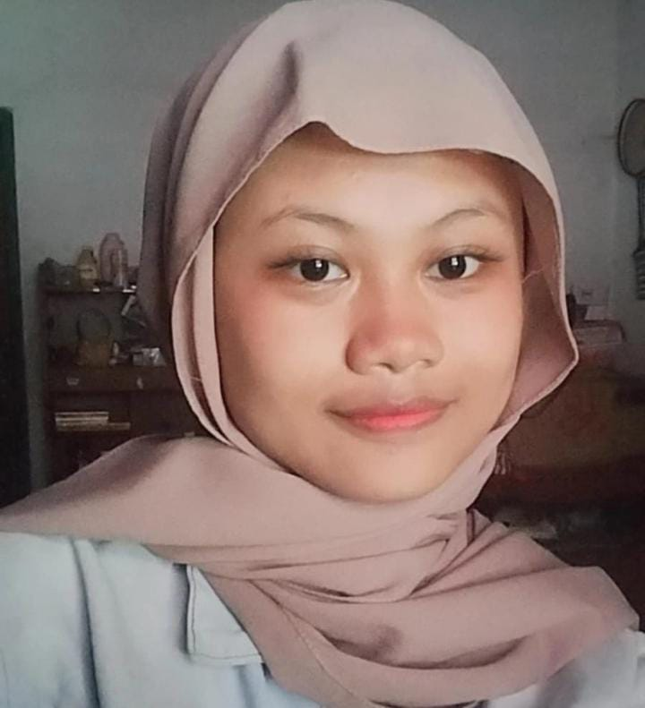

selamat ulang taun cantik hehehe cieee tambah lagi usia kamu gapapa walaupun begitu you are still pretty!!semoga Allah lancarin semua urusan kamu yaa dan aku berharap di ultah kamu yang sekarang bisa jadi pengalaman hidup yang indah, jaga kesehatan kamu oke?kita saling kirim doa satu sama lain dan aku ga bakal pernnah berhenti buat doain hal yang terbaik buat kamu cantik dont push urself toooo, i always love youuu di setiap doa aku ada nama kamu yang aku sebut hehehe semangat buat kuliah nya cantik, ni aku inisiatif buat gini karena aku mau kamu dapet yang seharusnya kamu dapet, you deserve better okay?untuk kado masih belum sampeee nanti kalau udah deket lokasi aku kasi tauuu. jangan bobo malem malem yaaa nanti kaya vampirrr tuuu item mata nya tapi gapapa sih mau gimana pun kamu tetep cantik, tetep manis wkwkwk tetep jadi tobeli kuuu yaaa tobeliii smootiesss ice creammmm. sekali lagi selamat ulang tahun!!!!
Jadikan momen ini spesial dan tak terlupakan!
Rayakan Bersama Kami